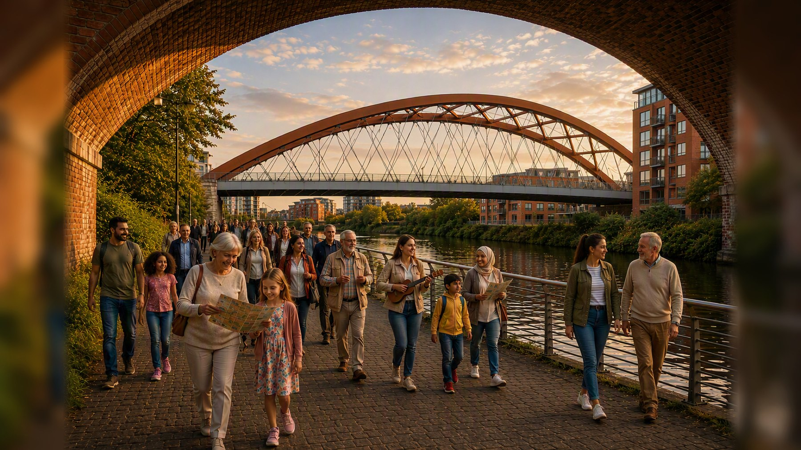
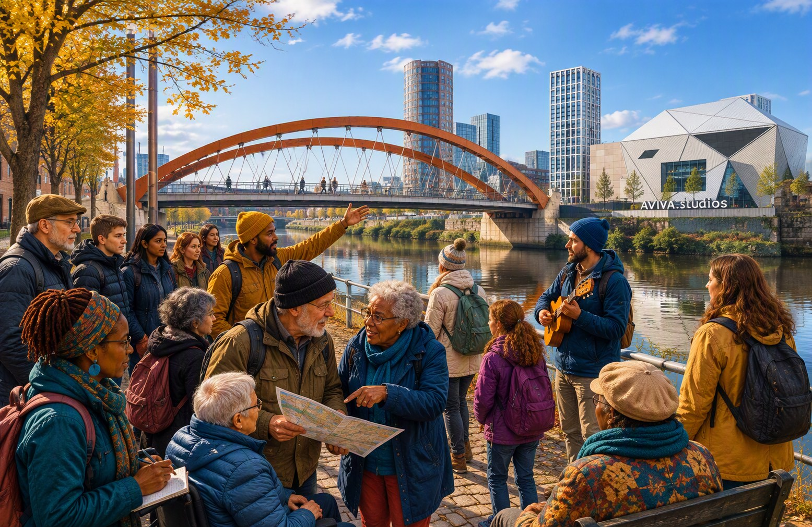

Families, friends and curious minds
A Christmas experience for all generations
Come with children, parents, grandparents, a partner, friend or neighbour. Or book one place and come on your own. Listen, notice, compare and discover the River Irwell together.
Explore the Irwell together
Different generations notice different things
A bridge may prompt one person to think about engineering, another to notice a train and someone else to remember how the riverside used to look. The experience leaves room for those different observations.

